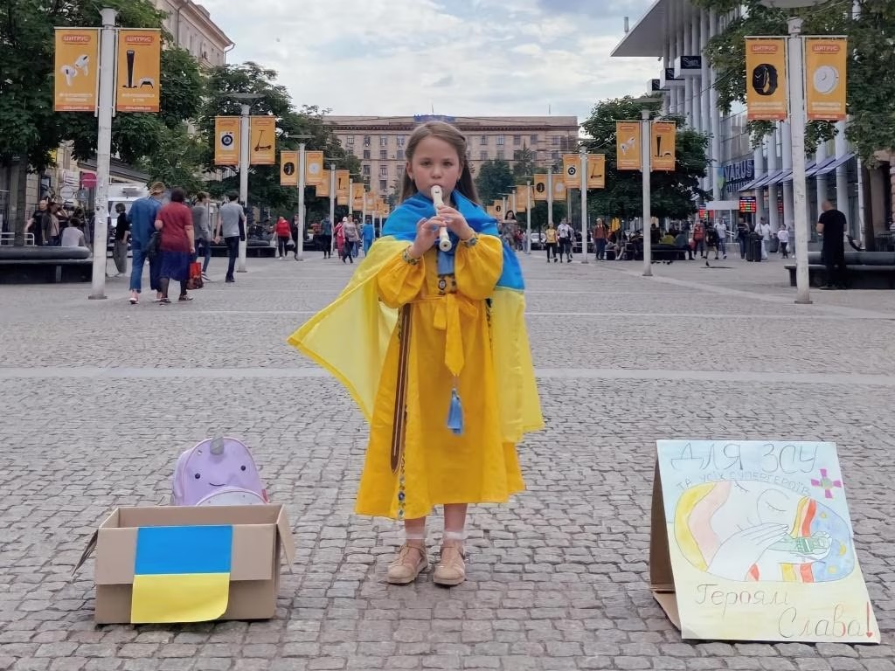
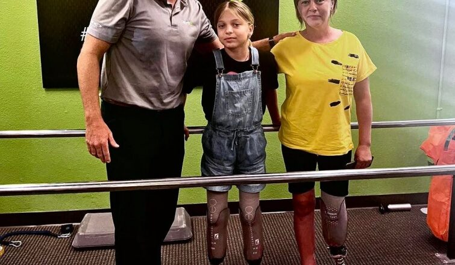
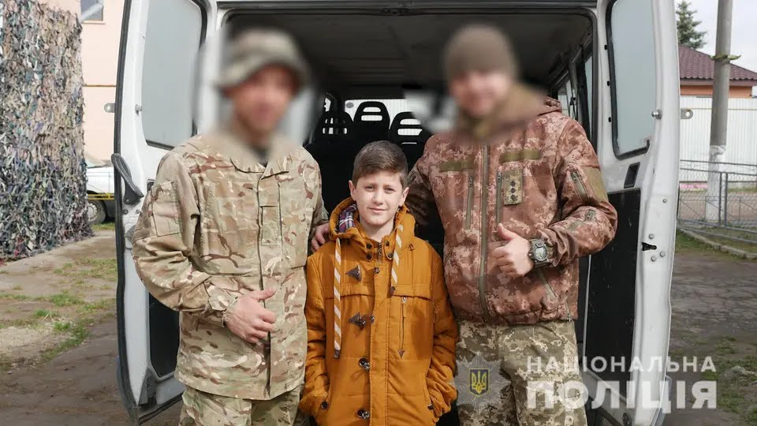
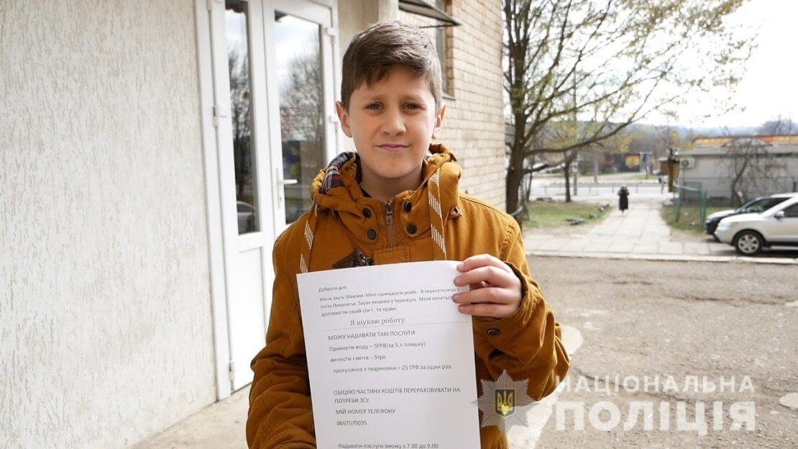

Українські діти побачили війну на своїй землі. Тепер їхнє дитинство — це зруйновані школи та понівечені дитсадочки, звуки повітряної тривоги й вибухів, втрати рідних і друзів. Однак наші діти перетворюють обставини на виклик. Своїми вчинками доводять, що нічого неможливого немає і найслабший може мати силу боротися за свою мрію. Ці діти, попри всі втрати, залишаються Незламними. Широкомасштабне вторгнення рф змусило 6,2 млн українців шукати безпеки, захисту та допомоги за кордоном. Понад 1,5 млн з них — діти. Війна змінила маленьких українців, але не позбавила їх мрій та переконань. Своєю історією поділились Анна та її брати Матвій і Андрій. До широкомасштабного вторгнення вони були звичайною родиною: діти навчались, батьки працювали — все, як в усіх. Але прийшла війна, пролунали перші вибухи, завили сирени… і батько пішов на фронт. Коли він загинув, дружина вирішила, що повинна зайняти його місце. Їхня мати Ївга доєдналась до медичного батальйону «Госпітальєри». — Я не хотіла, щоб вона йшла, дуже сильно не хотіла, — каже її 14-річна дочка Анна. — Після втрати тата я хотіла, щоб у мене хтось залишився. Хочу, щоб вона була з нами — але розумію: вона відчуває, що повинна туди йти. Я підтримую її, але в глибині душі — боюся за неї. Брати Анни — Матвій та Андрій, розуміють, що мама навіть не завжди може відповісти на їхній телефонний дзвінок. — Ми працюємо трьома екіпажами: два екіпажі ЗСУ і один «Госпітальєрів». Якщо один поранений, то хтось один з нас їде, а якщо масова евакуація — то їдемо по черзі «каруселлю» і забираємо всіх з точки евакуації. Діти знають всі правила: якщо я не взяла слухавку, то сьогодні ми не розмовляємо, — розповідає парамедик Ївга. На жаль, українські діти швидко подорослішали. Попри все, що відбувається, покоління українських дітей війни — це усвідомлена україномовна молодь, багато з них залучені у волонтерство. Зокрема і діти Ївги, бувши в Польщі, влаштовували онлайн-концерти Facebook і збирали кошти.
Так само і восьмирічна Софійка з Дніпра грала на блокфлейті в парку і збирала на ЗСУ. — В мене була блокфлейта, сопілки тоді ще не було, тож я могла грати на Європейській площі у Дніпрі й збирати кошти на ЗСУ. Я почала збирати на «броніки» і назбирала майже 5 тисяч. Це була половина першого «броніка». Це була моя ідея — допомагати ЗСУ, щоб пришвидшити Перемогу, — розповідає дівчинка. Вона чекає, щоб її тато повернувся з війни з Перемогою та вони всією родиною поїхали на море в Бердянськ.
Серед героїв фільму «Незламні діти. Я чекаю» — 12-річна Яна з Нью-Йорка Донецької області, яка опинилась з мамою і братом на вокзалі в Краматорську під час обстрілу рф 8 квітня 2022 року. Вони вирішили виїхати спонтанно, прибули на вокзал, де людей розташували в різних залах, а потім Яна з мамою вийшли на перон. — В очах різко потемніло, я підняла ноги і не побачила їх, ніг не було. У мами теж не було однієї ноги, — зі сльозами згадує дівчинка. Родині вдалось вижити, але Яні та її мамі довелось пройти протезування кінцівок у США. Це було важко, боляче, вони довго не могли оговтатися від того, що втратили частину тіла. Брат Яни Ярослав, який, на щастя, лишився неушкодженим, всіляко допомагав мамі та сестрі. Родина пережила не лише цю трагедію, але й стан прийняття реальності й надію на протезування. Однак все вдалося — вони успішно пройшли всі етапи і вже ходять на протезах, а Яна навіть вчиться займатися на бігових протезах. — Коли я починала ходити, мені було кожен день дуже важко, але я переконувала себе, що зможу, і з кожним днем ходитиму все краще, і так мотивувала себе, — згадує Яна перші кроки на протезах. Мама Яни підтримує дочку у всьому:— Не можна зупинятися на тому, що «я не буду» чи «я не зможу». Для нас є тільки «вперед», це головне — рухатися вперед. Ми мріємо про Перемогу. Так хочеться додому повернутися — в нашу Донецьку область.  День захисту дітей вперше святкувався в 1950 році в 51 країні світу. ООН підтримала ініціативу та оголосила одним із пріоритетних напрямів діяльності захист прав, життя та здоров'я дітей. З нагоди свята розповідаємо історії маленьких українців, які наближають перемогу великими вчинками. На Тернопільщині дев’ятирічна Марічка Підфігурна збирає гроші на тепловізор для українських військових. Дівчина продає іграшки, власні речі та саморобні прикраси. Кожного покупця пригощає цукерками та дозволяє обирати ціну товарів самостійно, а зібрані кошти передає у волонтерський штаб.
«Я побачила, що діти з Харкова продають іграшки, теж захотіла долучитися. Ми збираємо гроші військовим на тепловізор. У мене можна придбати приколки, іграшки, книжки, бульбашки, лизуни та книжки», – розповідає школярка. Одинадцятирічний Максим вимушено переїхав із родиною в Чернівці з Покровська та активно допомагає українським військовим протистояти російським загарбникам. Школяр зміг зібрати кошти на 20 бронежилетів, тепловізор і одяг для ЗСУ. Дивовижна історія почалася з оголошення, у якому хлопець шукав роботу. Згодом про Максима дізналися в інтернеті та йому вдалося зібрати гроші на потреби військових. «Разом із мамою школяр переказав кошти на придбання одягу захисникам, а також на реабілітацію військовослужбовця, який через поранення втратив ногу», – розповіли в Нацполіції. Мистецтво також наближає Україну до перемоги. Малюнок одинадцятирічної школярки Софії Кравчук став легендою та символом незламності українців. Дівчинка намалювала найбільший у світі літак «Мрія», який знищили російські окупанти. Тепер робота Софії прикрашає заповітну для мільйонів українців марку під назвою «Українська мрія». «Ілюстрацію ще до війни намалювала одинадцятирічна Софія з Волинської області для участі в конкурсі «Що для мене Україна?». Саме такою дитина бачить нашу країну – яскравою й квітучою», – повідомляє поштовий оператор. Пам’ятайте, що кожен здобуває Україні славу на своєму фронті.